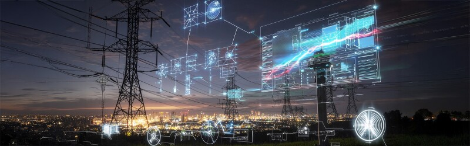

Additional resources
Learn more from these trusted organizations:
A smart grid uses sensors, digital monitoring, and automation to improve efficiency and quickly respond to outages or changes in energy demand.
This technology can help utility companies manage electricity more accurately and support cleaner energy sources.

Batteries store extra energy for later use, especially when renewable energy production is high. Microgrids are smaller local power systems that can sometimes operate independently during emergencies.
As more people use electric vehicles, the power grid must adapt to increased demand. Smart charging systems can help reduce stress on the grid and improve energy use.
Learn more from these trusted organizations: